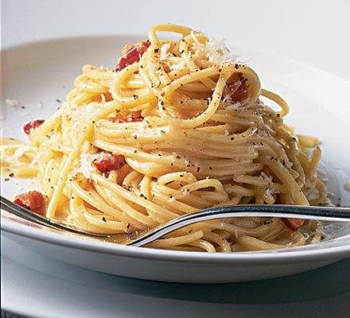

Carbonara

Description
This dish was created in the Lazio region
(the area around Rome) in the middle of the 20th
century, after World War Two.
Buon appetito.
Ingredients
- 2 teaspoons olive oil
- 1 pound guanciale (cured pork cheek), diced
- 1 (16 ounce) package spaghetti
- 3 eggs
- 10 tablespoons grated Pecorino Romano cheese, divided
- salt and ground black pepper to taste
Steps
- Heat olive oil in a large skillet over medium heat;
add guanciale (see Cook's Note).
Cook, turning occasionally,
until evenly browned and crispy,
5 to 10 minutes. Remove from heat and drain on
paper towels.
- Bring a large pot of salted water to a boil.
Cook spaghetti in the boiling water,
stirring occasionally until tender yet firm
to the bite, about 9 minutes.
Drain and return to the pot.
Let cool, stirring occasionally,
about 5 minutes.
- Whisk eggs, half of the Pecorino Romano cheese,
and some black pepper in a bowl until smooth and
creamy. Pour egg mixture over pasta, stirring
quickly, until creamy and slightly cooled.
Stir in guanciale. Top with remaining Pecorino
Romano cheese and more black pepper.